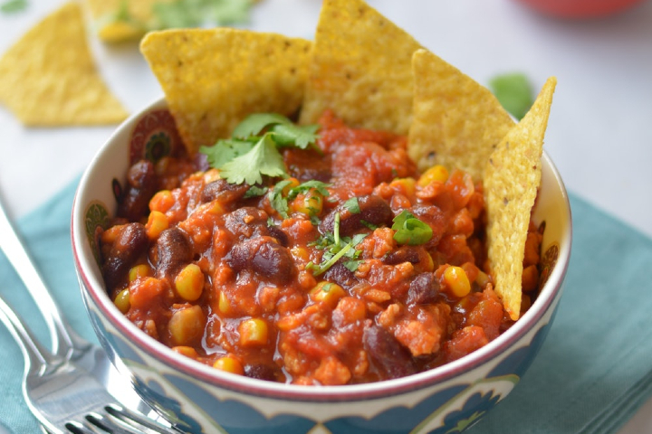
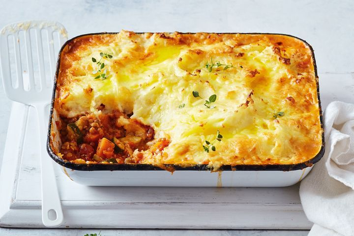
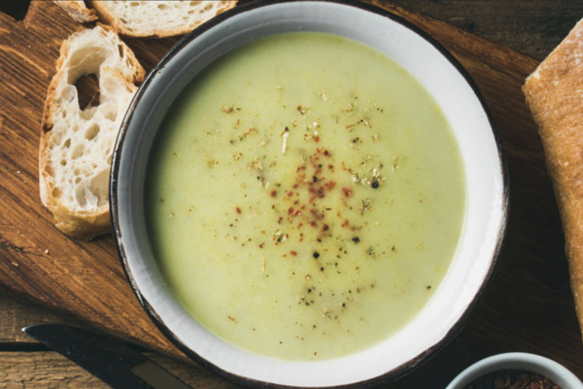

Latest Recipes

Chili sin Carne
No meat in this chili... ! A super delicious chili with sweet potato, onion, kidney beans and corn. Spice level in this recipe is mild. Served with rice and tortilla chips! Yum!
View Recipe

Shepherd's Pie
A rich vegetarian shepherds pie with vegetables, mash, mustard and a lot of cheese. The classic Brittish cottage pie without the minced beef, but with a lot of taste and cheese!
View Recipe

Courgette Soup
A very healthy but creamy courgette soup with only 4 ingredients! It's one of my favourites to cook and to eat, beacuse it's super easy to make but it's so tasty! I probably make this soup thrice a month!
View Recipe
Sticky Tempeh
Sugar coated Tempeh with peanuts, tauge, bellpepper and rice. Tempeh is a traditional soy product, that is made from fermented soybeans. Try the Indonesian cuisine!
View Recipe